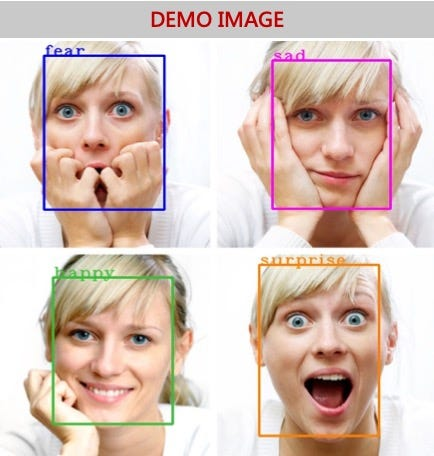

Projects
Photovoltaic Power Generation for Short-term Solar Forecasting
Addressing the challenge of variability in solar power output, the study evaluates three different Convolutional Neural Network (CNN) models using an extensive dataset of sky images and photovoltaic (PV) power generation collected over three years.
- Convolutional Neural Networks
- Machine Learning
- Research
AP Score Predictor

AP Score Predictor is a mini-project that takes in binary input of student indicators such as work habits, attendance, and collaboration along with factors such as letter grade to create Random Forest Association and predict AP Score!
- Data
- Machine Learning
- Random Forest
Pocket Therapist
Your Pocket Therapist uses an AI Face algorithm to accurately understand the user's emotions and provide advice/quotes in response. Credit to: Tanisha Patil, Vivian Ni
- Data
- Machine Learning
- Spring
ML Fitness Project

Machine learning exploration on fitness data and calorie prediction using pandas DF. This has many applications into real-world situations of nutritionists and medical professionals.
- Machine Learning
- Data
- Pandas
ML Age/Gender Detector

Exploration of CV and intersection with machine learning. This project predicts age and gender of the user based on 64 facial landmarks. Feel free to test the model!
- Machine Learning
- Data
- CV
KASM V2 User Management System
Developed frontend for user management as well as backend system separate for admins and users. This management system is meant to ease the process of educators using KASM servers to aid students without access to personal devices in order to support their learning.
- Flask
- Data
- Python
Biopsy Classifier

A regression model that can determine whether a breast cancer sample is malignant or benign.
- Data
- Machine Learning
- Python
Transit Photometry
Co-authored presentation, led team in creating 99.87% accuracy C-neural network to predict transit photometry for exoplanet discovery.
- CNN
- AI
- Graphical Analysis